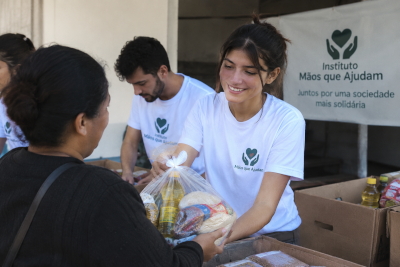

Sobre o Instituto

O Instituto Mãos que Ajudam trabalha para promover ações sociais e incentivar a solidariedade e o voluntariado.
Nossas ações
Campanhas ativasAtualmente, o Instituto realiza campanhas de arrecadação de alimentos, agasalhos e materiais escolares.
Atenção:
As doações podem ser entregues nos pontos de coleta
do Instituto Mãos que Ajudam.
Obrigado por ajudar!
Sua participação pode fazer a diferença na vida de muitas pessoas.
Contato
E-mail: contato@maosqueajudam.org
Telefone: (41) 99999-9999